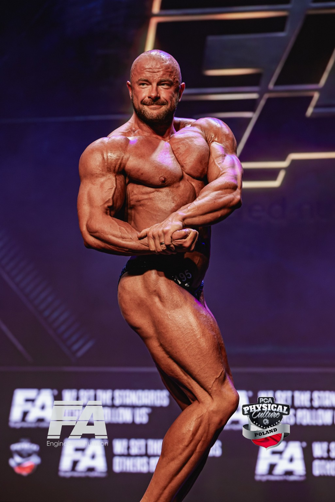
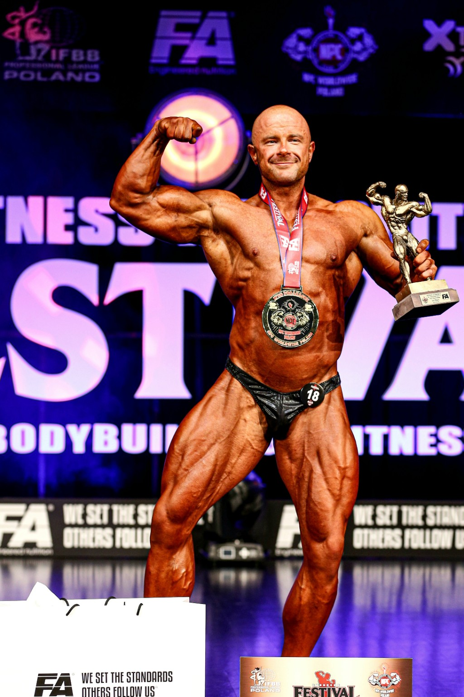

01 / PLAN TRENINGOWY
WIELKIE BARKI
Plan treningowy na rozwój mięśni naramiennych.
- 16 tygodni treningu
- 4 dni treningowe w tygodniu
- Dla średnio zaawansowanych i zaawansowanych
39 ZŁ

TRENINGI PERSONALNE W LESZNIE • PROWADZENIE ONLINE
Plan działania, pełna kontrola i wsparcie na każdym etapie.

O MNIE
Nazywam się Daniel Loman. Jestem trenerem personalnym oraz aktywnym zawodnikiem sportów sylwetkowych, zdobywając na przestrzeni lat liczne medale na wielu imprezach.
Lata wyrzeczeń, wymagających przygotowań i konsekwentnej pracy nauczyły mnie, że wynik nie bierze się z przypadku. Liczą się dobrze ułożony plan, cierpliwość i regularna kontrola postępów. Dziś to doświadczenie wykorzystuję, prowadząc innych do lepszej sylwetki, większej siły i formy, z której mogą być dumni.
01 / WSPÓŁPRACA
Potrzebujesz trenera obok, regularnego prowadzenia czy planu do samodzielnej pracy?
Zacznij od formy współpracy. Szczegóły i zakres ustalimy przed rozpoczęciem.
Godzina pracy pod moim okiem. Dobór ćwiczeń do Twoich możliwości i nadzór nad ich wykonaniem.
Trenujesz samodzielnie, a ja pomagam utrzymać kierunek. Plan treningowy i żywieniowy, cotygodniowe raporty oraz kontakt i korekty.
Dobór ćwiczeń, serie, powtórzenia i progresja. Rozpiska, z którą możesz działać na własnych treningach.
Plan dopasowany do celu, preferencji i codziennego trybu życia. Rozpisane posiłki, kaloryczność, makroskładniki i zamienniki produktów.
JAK ZACZYNAMY
Powiedz, nad czym chcesz pracować i gdzie trenujesz.
Ustalamy formę współpracy, zakres i cenę.
Zaczynamy treningi albo przygotowanie planu do realizacji.
W prowadzeniu online raporty pomagają ocenić postępy i wprowadzać korekty.
Zmiany, za którymi stoją plan, konsekwencja i wspólna praca.
E-BOOKI TRENINGOWE
E-booki treningowe mojego autorstwa, oparte na latach doświadczeń i własnych obserwacjach.
01 / PLAN TRENINGOWY
Plan treningowy na rozwój mięśni naramiennych.
NAJCZĘŚCIEJ ZADAWANE PYTANIA
Trening personalny odbywa się ze mną na siłowni, gdzie przez całą godzinę pracujesz pod moim okiem. Podczas prowadzenia online trenujesz samodzielnie według przygotowanego planu, a ja regularnie kontroluję Twoje postępy.
Po rozmowie i zebraniu potrzebnych informacji przygotowuję plan treningowy i żywieniowy. Co tydzień przesyłasz raport, a ja sprawdzam postępy i wprowadzam potrzebne zmiany. Do tego dochodzi stały kontakt ze mną według ustalonej formy.
Plan treningowy jest jednorazową rozpiską do samodzielnej realizacji. Prowadzenie online obejmuje dodatkowo cotygodniowe raporty, kontrolę postępów, kontakt oraz bieżące modyfikacje.
Tak. Plan i zakres współpracy dopasowuję do Twojego doświadczenia, możliwości, trybu dnia oraz celu.
Podczas prowadzenia online postępy kontrolujemy na podstawie cotygodniowych raportów. Dzięki temu mogę ocenić kierunek pracy i w razie potrzeby wprowadzić korekty.
Tak. Prowadzenie online obejmuje plan treningowy i żywieniowy. Plan żywieniowy możesz również zamówić jako osobną usługę.
Treningi personalne odbywają się w Champions’ Gym w Lesznie.
Napisz do mnie, jaki masz cel, jakie masz doświadczenie i gdzie chcesz trenować. Na tej podstawie dobierzemy odpowiednią formę współpracy.
KONTAKT
Napisz do mnie lub zostaw kontakt do siebie. Odezwę się i ustalimy, od czego najlepiej zacząć.
INSTAGRAM@LOMAN.DANIEL TELEFON604 433 116